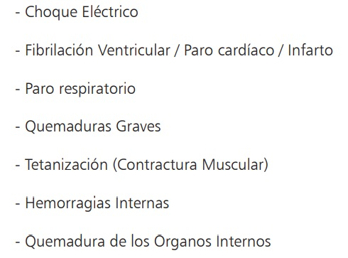
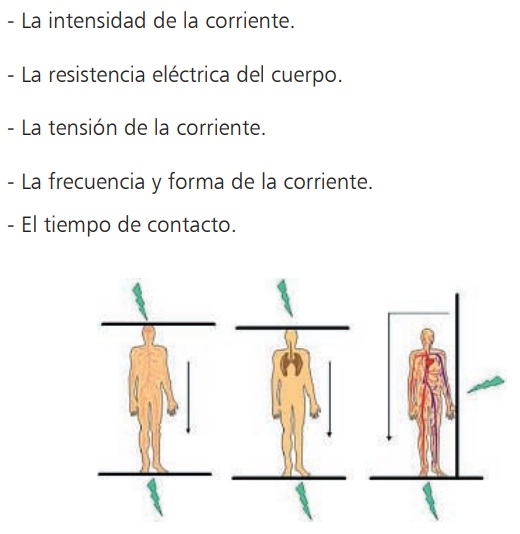

SOBRECARGA Y CORTOCIRCUITO
La diferencia entre la sobrecarga y el cortocircuito está en la escala de tiempo en la que ambos se desarrollan. Un cortocircuito se debe interrumpir en fracciones de segundo, mientras que la sobrecarga puede ser detectada después de muchos más segundos.
Alicate
Foco
Principalmente se usan para iluminar instalaciones deportivas, alumbrado ornamental de edificios emblemáticos, publicidad y seguridad.
¿Cuáles son los efectos de la electricidad sobre el cuerpo humano?
Las diferentes reacciones que pueden producirse en el organismo humano tras el contacto con conductores bajo tensión son los siguientes :

Y dependen de cierto número de elementos, que son:
